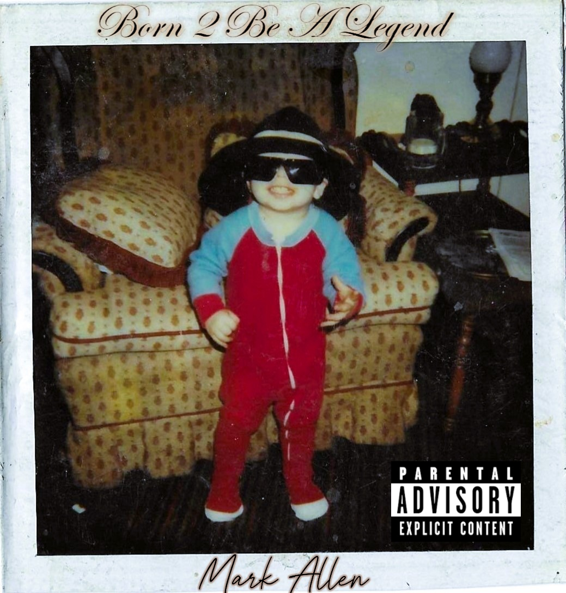

Founder & CEO · Artist · Producer
Mark Allen
Writer, producer and independent catalog owner directing the B2BAL era and Hustle Legend Records.
A 20-track autobiography built from survival, fatherhood, conflict, loyalty, ownership, punchlines and five missing years that refused to stay missing.
Every track is becoming a doorway into writing, delivery, history and the connections hiding between songs.
Decode punchlines, callbacks, internal rhyme, entendres, misdirection and the meaning underneath the first listen.
See how point of view, sequence, emphasis and performance can change the meaning of a record.
Follow the album as interconnected evidence: songs, dates, people, themes, milestones and documented history.
The site now remembers which B2BAL chapters you have explored on this device. Five tracks unlock your first Legend File. Explore all twenty and complete the album. No login. No fake follow. No personal information sent anywhere.
BEGIN THE 20-TRACK RUN
Born 2 Be A Legend is Mark Allen's first official release and the centerpiece of the current Hustle Legend Records era. Released April 5, 2026, it moves through survival, family, addiction, confrontation, identity, humor, ambition and ownership.
The writing rewards replay. Some lines hit as jokes or flexes first and reveal heavier memories later. Other tracks connect to events several songs away. HLR is preserving those layers instead of flattening the record into a streaming link.
Dated Spotify for Artists snapshots and verifiable public records preserve historical achievements even when rolling metrics later change.
Writer, producer and independent catalog owner directing the B2BAL era and Hustle Legend Records.

A&R and collaborator featured on “Started This War.”

Image consultant and creative collaborator within the HLR presentation.